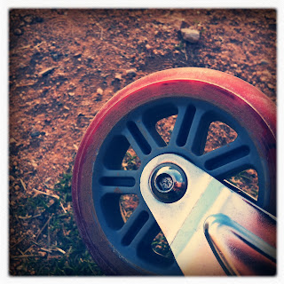

Recovered weblog entry
Wheel

I've been busy with the site redesign tonight, so this is all we have for today. Lens: Tejas
Film: Ina's 1935

Recovered weblog entry

I've been busy with the site redesign tonight, so this is all we have for today. Lens: Tejas
Film: Ina's 1935